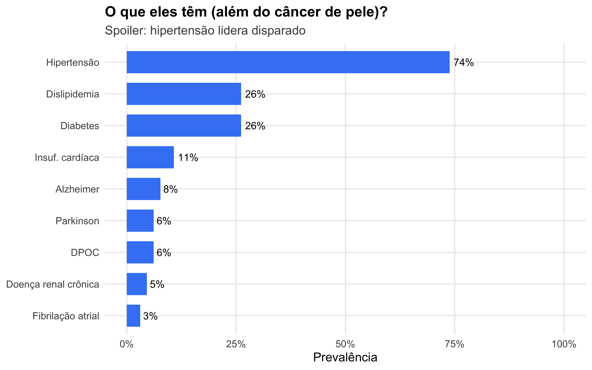
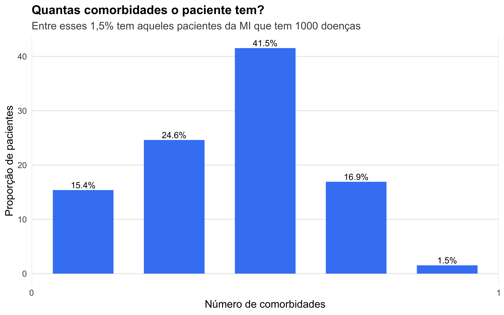
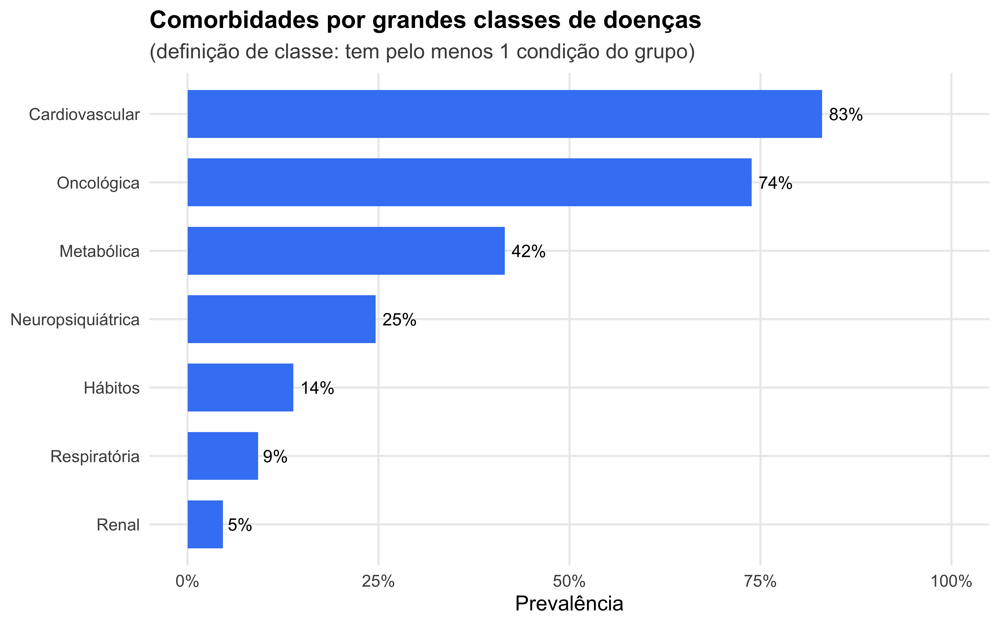
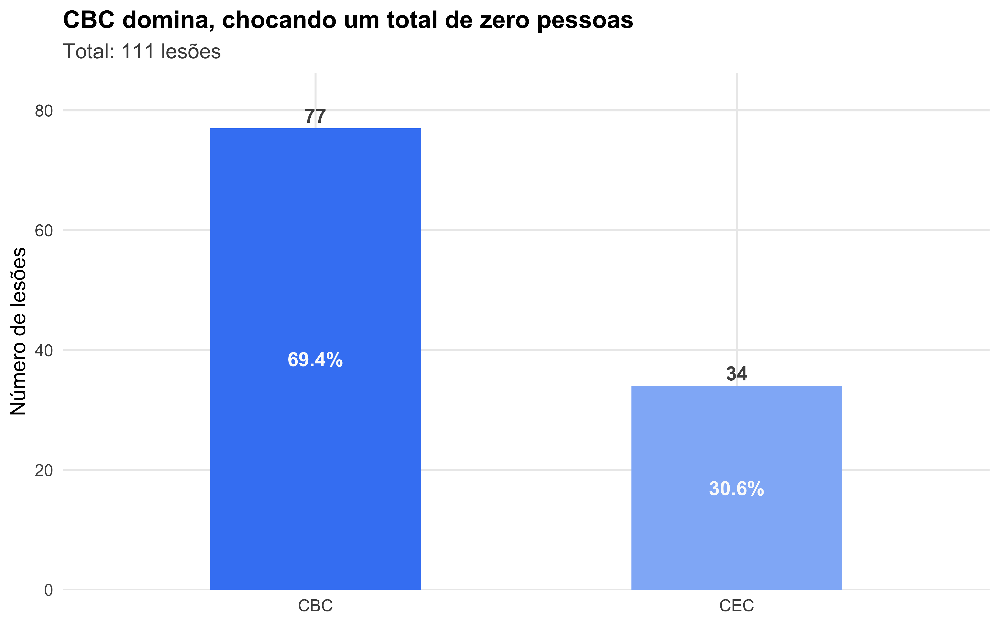
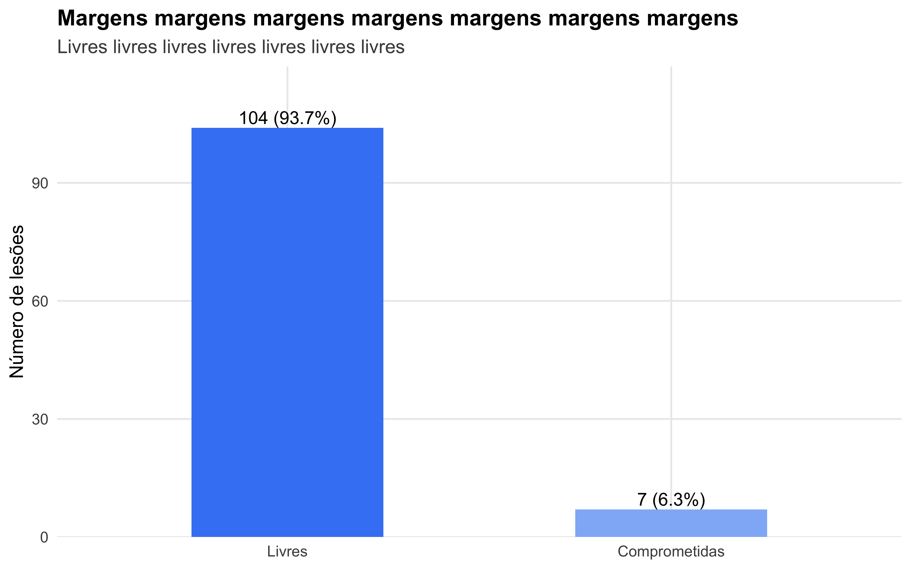
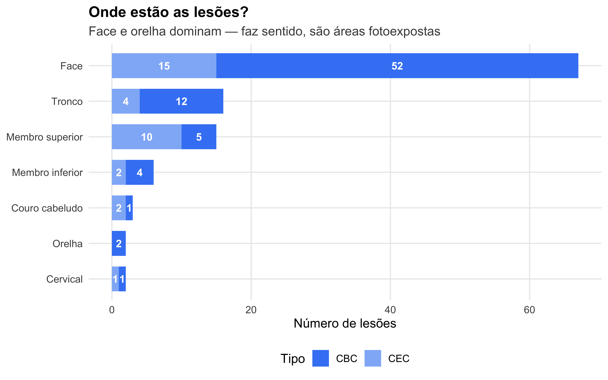
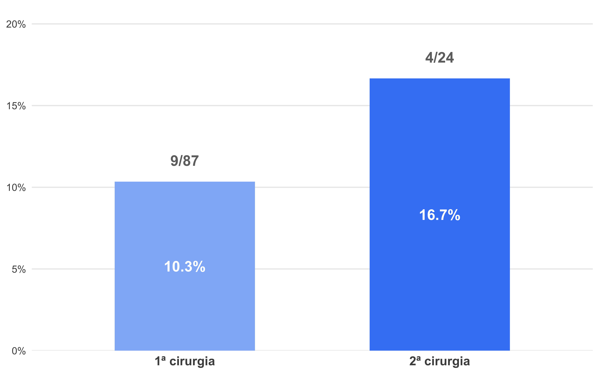
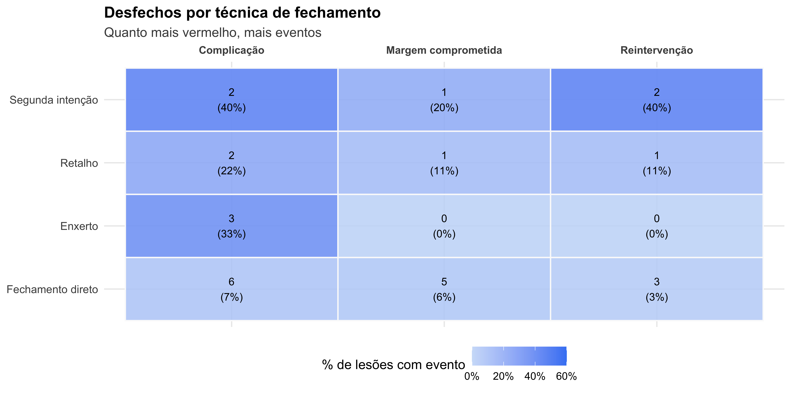
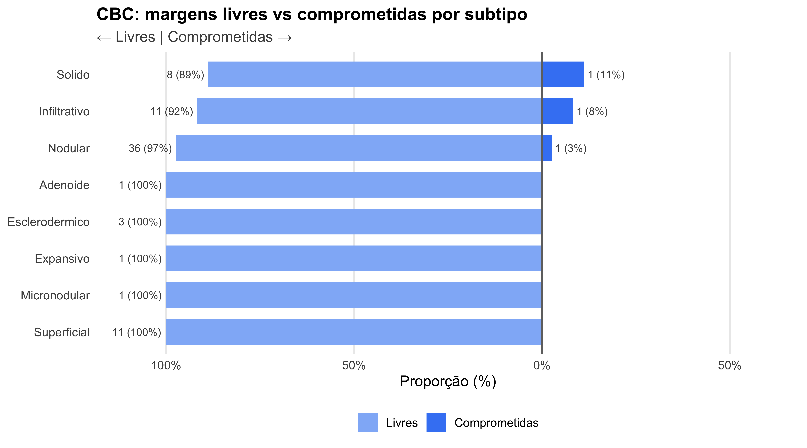

| Idade (anos) | N = 651 |
|---|---|
| 90 | 12 (18.5%) |
| 91 | 16 (24.6%) |
| 92 | 14 (21.5%) |
| 93 | 7 (10.8%) |
| 94 | 4 (6.2%) |
| 95 | 5 (7.7%) |
| 96 | 2 (3.1%) |
| 98 | 3 (4.6%) |
| 99 | 2 (3.1%) |
| 1 n (%) | |
Cirurgias Dermatológicas em Nonagenários
“Nonagenários” me lembra “nona”, que me lembra “picão da nona” 💖
1 Disclaimer
Hello didi, esse documento é a versão unificada e suprema da análise dos dados. Você tem dado em casa? Organizei tudo de um jeito que dá pra ver o que está acontecendo, entender os padrões, e (talvez o menos importante para os nossos propósitos) testar se as diferenças que a gente enxerga são reais ou só aleatoriedade.
O que temos em mões:
- 65 pacientes no total
- 111 lesões operadas no total
Roteiro da nossa jornada espiritual:
- Estatística descritiva — Quem são os pacientes? Como são as lesões?
- Análise bivariada — Aqui a gente cruza variáveis buscando associações
- Análise multivariada — Aqui vou ser vaidoso: é uma estatística analítica um pouco mais sofisticada
- Recorrência — Investigação dos pacientes que tiveram duas visitas (afinal, qual o problema deles?)
- Heatmaps — Meio que um radar pra explorar correlações
2 Estatística Descritiva
2.1 Quem são esses velhos?
2.1.1 “Mas quem tu é?”
| Característica | N = 651 |
|---|---|
| Sexo | |
| Feminino | 40 (61.5%) |
| Masculino | 25 (38.5%) |
| Fototipo (Fitzpatrick) | |
| 1 | 11 (16.9%) |
| 2 | 26 (40.0%) |
| 3 | 21 (32.3%) |
| 4 | 7 (10.8%) |
| Já teve CBC/CEC antes | 48 (73.8%) |
| Fez Mohs | 3 (4.6%) |
| Teve outras cirurgias | 18 (27.7%) |
| Faleceu no seguimento | 17 (26.2%) |
| 1 n (%) | |
DicaNenhuma novidade até aqui
Eu vi no Fantástico que essa é uma população de alto risco pra câncer de pele não-melanoma (aka CPNM): maioria feminina, fototipos baixos, e história prévia de CBC/CEC (quase ¾!)
Acho que a concentração de pacientes mais “jovens” (pacientes entre 90 e 92 anos somam mais da metade da população). Isso pode ser um viés de sobrevivência (pacientes mais velhos talvez ~já tenham morrido~ não tenham condições clínicas pra cirurgia eletiva)
2.1.2 Dando um zoom na idade

Olha que interessante: a mediana é 92 anos. Isso significa que metade dos teus pacientes tem mais que isso. É uma população bem idosa mesmo — o que faz total sentido pro teu recorte.
NotaPor que vamos usar mediana e não média?
Sim, eu também gosto da média. Ela é um ótimo resumo estatístico quando os dados são simétricos (ou seja, quando os valores giram em torno de um ponto central).
Só que como dá pra ver no Figura 1, a nossa amostra é assimétrica (dá pra ver direitinho que a maior massa de pacientes tá à esquerda), e isso distorce a média. Por esse motivo, ela não é a primeira linha no nosso caso.
A mediana, não sei se tu lembra, é exatamente o valor que divide a amostra em duas metades iguais. Metade dos pacientes tem idade menor que a mediana, e metade maior. Ela acaba sendo bem mais robusta quando a gente lida com valores extremos (tipo um paciente com 110 anos) e dá uma ideia melhor do “centro” quando os dados não se comportam de um jeito “bonitinho” em torno do centro.
Vale lembrar que essas estatísticas sempre tem seu parzinho. Pra média, existe o desvio padrão. O intervalo interquartil (Ou IIQ, para os íntimos): é uma medida de dispersão (assim como o desvio padrão). Ele contém os 50% centrais das observações (aqui, no caso, idade). Como ele filtra as pontas (os 25% maiores/menores), acaba sendo mais resistente a outliers (vamos supor, um paciente de 119 anos poderia distorcer a média e o desvio-padrão… O combo mediana/IIQ seguiria firme).
Os artigos costumam apresentar a mediana+IIQ no formato (mediana, IIQ). Sabe qual é o nosso? Rufem os tambores…
✨(92, 91–93)✨
Juro pra ti que essa estatística fica muito mais elegante em faixas menos restritas.
2.1.3 E as comorbidades?
Quase ninguém chega nos 90 zerado, né?

{kind=link}
A hipertensão é a doença mais frequente na nossa população, o que choca um total de zero pessoas. Mas repara na quantidade de comorbidades cardiovasculares e neurológicas. Isso pode ser um ponto interessante pra discussão — essa população não é a mais tranquila de operar.
2.1.3.1 Carga de comorbidades
Aqui eu coloquei o número de comorbidades pra ver quão doente a população é além do câncer de pele. O que dá pra tirar daqui: não é uma amostra “limpa”… Tem uns sem comorbidades, e outros com uma caralhada de doenças. Acredito que isso importa porque costuma aumentar o risco de complicações, cicatrização mais lenta, infecção etc. É uma carga razoável de comorbidades.

{kind=link}
Aqui eu coloquei o número de comorbidades pra ver quão doente a população é além do câncer de pele. O que dá pra tirar daqui: não é uma amostra “limpa”… Tem uns sem comorbidades, e outros com uma caralhada de doenças. Acredito que isso importa porque costuma aumentar o risco de complicações, cicatrização mais lenta, infecção etc. É uma carga razoável de comorbidades.
Também vale pra engrossar o caldo (caso a gente não se importe com honestidade intelectual)

{kind=link}
Gente, 83% da amostra tem pelo menos uma condição cardiovascular… O risco operatório não é a exérese, é o coração. Anticoagulação, manejo de pressão, risco de evento durante ou após a cirurgia…
2.2 Lesões (do espanhol: Las Lesioñes)
Agora olhando pras lesões em si o n engorda (são 111!!!)
NotaDetalhe metodológico
As lesões do mesmo paciente não são independentes. O mesmo paciente que teve uma complicação na exérese de uma lesão pode ter predisposição a ter complicações em outra.
Deixa baixo
2.2.1 CBC ou CEC?

{kind=link}
CBC representa 69% das lesões. O basocelular é o mais comum mesmo (o que é consistente com o que consta na Wikipédia), mas os 31% de CEC são mais agressivos (fonte: ChatGPT)
2.2.2 Desfechos em 2 minutos ou menos

{kind=link}
A maioria das margens veio livre… isso é bom! Mas tem 6.3% de margens comprometidas ou parcialmente comprometidas.
Esses casos devem estar ligados diretamente à reintervenção ou acompanhamento mais próximo.
| Resumo dos desfechos | ||
| N = 111 lesões | ||
| Desfecho | n | % |
|---|---|---|
| Complicação | 13 | 11.7% |
| Margem comprometida | 7 | 6.3% |
| Reintervenção | 6 | 5.4% |
Taxas baixas, considerando a população (Fonte: Times New Roman, 12). Nonagenários com 83% de comorbidade cardiovascular são uma bomba-relógio.
2.3 LOcal das lesões

{kind=link}
Eu não programei esse gráfico… Eu o pari
3 Análise Bivariada
Agora a gente sai das contas de +/- e entra nas contas de * e ÷.
NotaNinguém pergunta mas mesmo assim eu respondo
Por que usei o Teste Exato de Fisher?
Com poucos eventos (13 complicações, 7 margens comprometidas), o teste exato de Fisher é mais confiável do que o teste do Qui-quadrado. Ele calcula a probabilidade exata, sem depender de aproximações (que em outros métodos funcionam mal com N pequeno).
3.1 Fatores associados a complicações
| Quem complica mais? | ||||
| Análise bivariada com teste exato de Fisher | ||||
| Característica | Total1 | Não1 | Sim1 | p-valor2 |
|---|---|---|---|---|
| Sexo | 0.14 | |||
| Feminino | 59 (53.2%) | 55 (56.1%) | 4 (30.8%) | |
| Masculino | 52 (46.8%) | 43 (43.9%) | 9 (69.2%) | |
| Faixa etária | 0.8 | |||
| 90-92 | 66 (59.5%) | 57 (58.2%) | 9 (69.2%) | |
| 93-95 | 36 (32.4%) | 33 (33.7%) | 3 (23.1%) | |
| 96+ | 9 (8.1%) | 8 (8.2%) | 1 (7.7%) | |
| Nº comorbidades | 0.3 | |||
| 0 | 17 (15.3%) | 13 (13.3%) | 4 (30.8%) | |
| 1-2 | 73 (65.8%) | 66 (67.3%) | 7 (53.8%) | |
| 3+ | 21 (18.9%) | 19 (19.4%) | 2 (15.4%) | |
| Tipo histológico | 0.10 | |||
| CBC | 77 (69.4%) | 71 (72.4%) | 6 (46.2%) | |
| CEC | 34 (30.6%) | 27 (27.6%) | 7 (53.8%) | |
| Técnica de fechamento | 0.045 | |||
| Direto/2ª intenção | 92 (82.9%) | 84 (85.7%) | 8 (61.5%) | |
| Retalho/Enxerto | 19 (17.1%) | 14 (14.3%) | 5 (38.5%) | |
| Localização | 0.5 | |||
| Cervical | 2 (1.8%) | 2 (2.0%) | 0 (0.0%) | |
| Couro cabeludo | 3 (2.7%) | 3 (3.1%) | 0 (0.0%) | |
| Face | 67 (60.4%) | 58 (59.2%) | 9 (69.2%) | |
| Membro inferior | 6 (5.4%) | 5 (5.1%) | 1 (7.7%) | |
| Membro superior | 15 (13.5%) | 12 (12.2%) | 3 (23.1%) | |
| Orelha | 2 (1.8%) | 2 (2.0%) | 0 (0.0%) | |
| Tronco | 16 (14.4%) | 16 (16.3%) | 0 (0.0%) | |
| 1 n (%) | ||||
| 2 Teste exato de Fisher | ||||
ImportanteRepara:
Técnica de fechamento parece fazer diferença!
- OR bruto: 3.7 (IC95%: 0.8–15.1)
- p = 0.045
Mas calma! Esse resultado aparenta ser bastante frágil. 1. As lesões não são eventos independentes Alguns pacientes têm mais de uma lesão, então as observações não são independentes. Uma prerrogativa do teste de Pescador (Fisher) é a independência das unidades. A dependência normalmente subestima incerteza, e isso pode deixar a análise “otimista” demais… 2. O resultado tá bem perto (só a pontinha da goiaba) do nível de significância Resultados com poder estatístico foda costumam ter p < 0.001. Mudanças pequenas em uma célula (1 evento a + ou -) podem cruzar o limiar de 0,05. Em outras palavras, o nosso p ter ficado abaixo de 0,05 pode ser só “sorte”. 3. A definição de complicação pode significar uma infecção leve ou necrose do enxerto Pequenas decisões de classificação agregam eventos na categoria “complicação”, o que pode distorcer a análise. 4. A gente fez muitos testes, né? Quanto mais testes a gente faz, maior a chance de achar algo “significativo” só por acaso. Isso é o famoso “problema das comparações múltiplas”. Quem não conhece? Normalmente o jeito de lidar com isso é ajustar o nível de significância (tipo a correção de Bonferroni), que deixa o teste mais “exigente” justamente pra contrabalançar com os vários testes.. 5. Lesões que precisam de retalho/enxerto provavelmente são maiores ou mais complexas E isso pode ser o que realmente aumenta o risco de complicação, e não a técnica em si. 6. Outros fatores (caso os 5 itens anteriores ainda não tenham te convencido) Idade, sexo, fragilidade, diabetes, DRC, tabagismo, imunossupressão, localização, tamanho da lesão, fototipo, cirurgia (a sirurgia ocorreu tudo bem mas seu filho teve uma parada cardiáca), quem fez a cirurgia (residente x preceptor), tempo de seguimento, essas coisas.
3.2 Fatores associados a margem comprometida
Favor notar que a beleza dessa tabela não é o p-valor, mas sim sobre o cruzamento de característica clínica x margem comprometida. Isso até pode ir pro trabalho sem a última coluna!!!
| Quem tem mais margem comprometida? | ||||
| Análise bivariada com teste exato de Fisher | ||||
| Característica | Total1 | Não1 | Sim1 | p-valor2 |
|---|---|---|---|---|
| Tipo histológico | 0.2 | |||
| CBC | 77 (69.4%) | 74 (71.2%) | 3 (42.9%) | |
| CEC | 34 (30.6%) | 30 (28.8%) | 4 (57.1%) | |
| Técnica de fechamento | >0.9 | |||
| Direto/2ª intenção | 92 (82.9%) | 86 (82.7%) | 6 (85.7%) | |
| Retalho/Enxerto | 19 (17.1%) | 18 (17.3%) | 1 (14.3%) | |
| Localização | 0.14 | |||
| Cervical | 2 (1.8%) | 2 (1.9%) | 0 (0.0%) | |
| Couro cabeludo | 3 (2.7%) | 2 (1.9%) | 1 (14.3%) | |
| Face | 67 (60.4%) | 63 (60.6%) | 4 (57.1%) | |
| Membro inferior | 6 (5.4%) | 6 (5.8%) | 0 (0.0%) | |
| Membro superior | 15 (13.5%) | 15 (14.4%) | 0 (0.0%) | |
| Orelha | 2 (1.8%) | 1 (1.0%) | 1 (14.3%) | |
| Tronco | 16 (14.4%) | 15 (14.4%) | 1 (14.3%) | |
| 1 n (%) | ||||
| 2 Teste exato de Fisher | ||||
4 Análise multivariada
A gente ajusta uma variável pela outra pra ver se o efeito continua lá.
AvisoLimitação importante
Com só 13 complicações, não dá pra colocar muitas variáveis no modelo. Uma prática comum, segundo uma postagem que eu vi no Reddit, é ~10 eventos por variável. Então vou ser conservador: modelo com 1-2 variáveis.
| Modelo multivariado: complicações | |||
| Regressão logística, resultado em OR ajustado (IC 95%) | |||
| Característica | OR1 | IC 95%2 | p-valor3 |
|---|---|---|---|
| Técnica de fechamento | |||
| Direto/2ª intenção | 1.00 | — | |
| Retalho/Enxerto | 4.95 | 1.25 - 19.8 | 0.020 |
| Tipo histológico | |||
| CBC | 1.00 | — | |
| CEC | 3.95 | 1.13 - 15.1 | 0.033 |
| 1 OR: odds ratio (razão de chances) | |||
| 2 IC 95%: intervalo de confiança de 95% (limite inferior – limite superior) | |||
| 3 Teste de Wald; modelo ajustado para técnica de fechamento e tipo histológico | |||
DicaInterpretação
Tudo que a gente viu na análise bivariada se aplica aqui (aquela lista de 6 itens)
Se o OR ajustado continua elevado e significativo, a técnica de fechamento parece ser um preditor independente de complicação (pelo menos nesse estudo, com nossos dados) — não só porque as lesões eram mais complexas.
5 E quem voltou?
Dos 65 pacientes, 17 tiveram uma segunda cirurgia. Perguntas:
- Quem são esses pacientes que voltam?
- A segunda cirurgia complica mais? Eu faço a pergunta e eu mesmo respondo: não^ ^ = os números parecem muito diferentes, mas a análise não é estatisticamente significativas
| Primeira vs Segunda cirurgia | ||||
| Comparação de desfechos entre visitas | ||||
| Característica |
Cirurgia
|
Total1 | p2 | |
|---|---|---|---|---|
| Primeira1 | Segunda1 | |||
| Complicação | 9 (10.3%) | 4 (16.7%) | 13 (11.7%) | 0.5 |
| Margem comprometida | 7 (8.0%) | 0 (0.0%) | 7 (6.3%) | 0.3 |
| Tipo histológico | 0.2 | |||
| CBC | 63 (72.4%) | 14 (58.3%) | 77 (69.4%) | |
| CEC | 24 (27.6%) | 10 (41.7%) | 34 (30.6%) | |
| 1 n (%) | ||||
| 2 Teste exato de Fisher | ||||
Aqui embaixo eu chamei de “visita” quando o paciente vem pela segunda vez

{kind=link}
Essa análise é exploratória — o N é pequeno e os pacientes que voltam podem ser diferentes desde o início.
6 Heatmaps
Heatmaps são ótimos pra visualizar padrões que tabelas escondem. A ideia é simples: a gente monta uma tabela de dupla entrada (tipo: técnica de fechamento × desfecho) e pinta as células conforme a intensidade do valor (por exemplo, porcentagem de complicações). Assim, fica fácil ver onde estão os “pontos quentes” nos quais a gente pode aprofundar as nossas análises”.
2/3
6.1 Técnica de fechamento × Desfechos

{kind=link}
Olha como retalho e enxerto ficam mais “quentes” na coluna de complicação!
6.2 CBC: Margens por subtipo
Esse aqui é um gráfico muito foda. A gente quer comparar a proporção de margens livres vs comprometidas para cada subtipo de CBC. Pra isso, a gente usa barras divergentes: aquelas que usamos para ver pessoas (de ver gente)! As barras pra margens livres vão pra esquerda (valores negativos) e as de margens comprometidas vão pra direita (valores positivos). Assim, dá pra ver rapidinho quais subtipos têm mais margens comprometidas e comparar com o todo

{kind=link}
7 Síntese
| Um grande resumo | |
| Para um grande grelo | |
| Indicador | Valor |
|---|---|
| Pacientes | 65 |
| Lesões | 111 |
| Idade mediana | 92 anos |
| Mulheres | 62% |
| CBC | 69% |
| Taxa de complicação | 11.7% |
| Margens comprometidas | 6.3% |
| Pacientes com 2ª cirurgia | 17 |
7.1 La discussión (o que podemos falar sobre os resultados)
7.1.1 O que parece importar?
- Técnica de fechamento: retalho e enxerto se associam a mais complicações.
- Subtipos agressivos de CBC: parecem ter mais margem comprometida, mas N é pequeno pra afirmar.
- Segunda cirurgia: pacientes que voltam parecem ter mais complicações
7.1.2 Limitaciónes (pra colocar na discussão)
Desenho 1. Estudo retrospectivo Os dados não foram coletados do presente pro futuro, foram coletados do passado pro presente através da análise de prontuário. Isso é bem mais prático, mas vem com o preço de os dados serem coletados com finalidade assistencial, não exsatamente científica 2. Centro único Pegar só uma fatia da população é válido, mas daí a gente tem que entender que os resultados só se aplicam da fatia de onde vieram 3. Sem grupo controle O padrão ouro seria comparar diferentes modalidades de tratamento com um grupo controle,: aí a gente podebater o martelo e dizer “x funciona melhor que y”. Aqui a gente só observa o que aconteceu, sem comparar com outra coisa.
Amostra 4. Pau N pequeno Com poucos casos (e principalmente poucos eventos), uma complicação a mais ou a menos muda tudo — inclusive p-valor, OR e IC. O resultado é mais frágil/instável e os intervalos de confiança ficam bem largos. 5. Viés de sobrevivência Olhar só pro passado é seletivo: só entra na amostra quem sobreviveu o suficiente (ou ficou tempo suficiente em seguimento) pra ter o desfecho registrado. Quem sumiu do acompanhamento (por óbito, transferência, fragilidade, perda de retorno) pode estar subrepresentado. Resultado: o estudo pode ser mais otimista com os resultados 6. Viés de seleção Os números dizem respeito a quem chegou e foi operado no serviço, naquele período, com X profissionais, sobrecarga de agenda. Isso também é fonte de viés
Aferição e dados (você tem dado em casa?) 7. Classificação de complicações “Complicação” é um termo muito amplo, e sem critérios rigorosos pode virar um saco de gato 8. Dados faltantes Eu juro que tava aqui, mas sumiu. E não é só faltar, é saber por que (pq aqui = separado e sem acento, preposição + pronome relativo/interrogativo = locução interrogativa) faltou. O resultado depende da distribuição dos dados faltantes: se for aleatório, sem problema! Mas se a ausência puxa/empurra o resultado pra qualquer direção, isso distorce as estimativas (ou seja, viés) 9. Tamanho da lesão ausente Em termos de cirurgia, tamanho é documento sim! E a gente não tem isso aqui. Talvez porque os registros de prontuário não sejam tão rigorosos nesse ponto.
Análise estatística 10. Já comentei: múltiplas comparações Quanto mais testes a gente faz, maior a chance de achar algo “significativo” só por acaso. Isso é o famoso “problema das comparações múltiplas.” Quem não conhece?. Mais 11. Confundimento residual Mesmo ajustando por algumas variáveis, sempre vão existir variáveis que a gente não consegue capturar (mesmo em delineamentos super foda/robustos tipo ensaios clínicos randomizados) e que influenciam direta ou indiretamente o resultado. 12. Temporalidade imprecisa Análise de prontuário é sempre uma grande merda, né? Tem gente que descreve tipo “semana seguinte”, outros “retornou depois”, “complicou em algum momento”, “abstinência há 6 meses” (3 evoluções no último ano com a mesma hashtag no ctrl+V). Se a data exata não for clara, fica difícil garantir fatores tipo ordem dos eventos, janela de risco ou comparar seguimentos de forma justa (o número de complicações vai ser diferente se o tempo de seguimento for 3 meses comparado com seguimento de 2 anos, concordas?). Moral da história: quando o desfecho depende do tempo de observação (não sei se é o caso aqui) ele pode embaralhar as interpretações.
Feito com muito amor, gerado por R em 01/02/2026 às 09:55